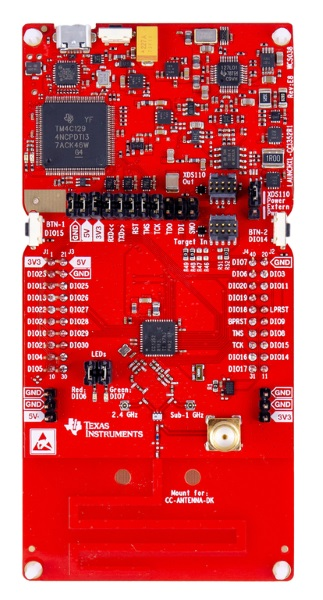

Matter CC1352 CC2652 Pump Controller Example Application
Contents
Matter CC1352 CC2652 Pump Controller Example Application#
An example application showing the use of Matter on the Texas Instruments CC13XX_26XX family of Wireless MCUs.
Introduction#

The CC13XX_26XX pump controller example application provides a working demonstration of a connected pump controller device. This uses the open-source Matter implementation and the Texas Instruments SimpleLink™ CC13XX and CC26XX software development kit.
This example is enabled to build for CC2652R7 devices.
The pump example is intended to serve both as a means to explore the workings of Matter, as well as a template for creating real products based on the Texas Instruments devices.
Device UI#
This example application has a simple User Interface to depict the state of the pump and to control the state. The user LEDs on the LaunchPad are set on when the pump is started, and are set off when stopped. The LEDs will flash when in the transition state between started and stopped.
Short presses (less than 1000ms) of the right user button (BTN-2) are used for
toggling the pump state.
Short presses (less than 1000ms) of the left user button (BTN-1) are used for
toggling Matter BLE advertisements.
Long presses (greater than 5000ms) of the left user button (BTN-1) will
initiate a factory reset of the device clearing all stored provisioning
information to allow for a new network setup.
Building#
Preparation#
Some initial setup is necessary for preparing the build environment. This section will need to be done when migrating to new versions of the SDK. This guide assumes that the environment is linux based, and recommends Ubuntu 20.04.
Download and install SysConfig (recommended version). This can be done simply with the following commands.
$ cd ~ $ wget https://software-dl.ti.com/ccs/esd/sysconfig/sysconfig-1.11.0_2225-setup.run $ chmod +x sysconfig-1.11.0_2225-setup.run $ ./sysconfig-1.11.0_2225-setup.run
Run the bootstrap script to setup the build environment.
$ cd ~/connectedhomeip $ source ./scripts/bootstrap.sh
Compilation#
It is necessary to activate the environment in every new shell. Then run GN and Ninja to build the executable.
Activate the build environment with the repository activate script.
$ cd ~/connectedhomeip $ source ./scripts/activate.sh
Run the build to produce a default executable. By default on Linux both the TI SimpleLink SDK and Sysconfig are located in a
tifolder in the user’s home directory, and you must provide the absolute path to them. For example/home/username/ti/sysconfig_1.11.0. On Windows the default directory isC:\ti. Take note of this install path, as it will be used in the next step.$ cd ~/connectedhomeip/examples/pump-controller-app/cc13x2x7_26x2x7 $ gn gen out/debug --args="ti_sysconfig_root=\"$HOME/ti/sysconfig_1.11.0\"" $ ninja -C out/debug
Programming#
Loading the built image onto a LaunchPad is supported through two methods; Uniflash and Code Composer Studio (CCS). UniFlash can be used to load the image. Code Composer Studio can be used to load the image and debug the source code.
UniFlash#
Code Composer Studio#
Viewing Logging Output#
By default the log output will be sent to the Application/User UART. Open a terminal emulator to that port to see the output with the following options:
Parameter |
Value |
|---|---|
Speed (baud) |
|
Data bits |
|
Stop bits |
|
Parity |
|
Flow control |
|
Running the Example#
Once a device has been flashed with this example, it can now join and operate in an existing Thread network. The following sections assume that a Thread network is already active, and has at least one OpenThread Border Router.
Provisioning#
The first step to bring the Matter device onto the network is to provision it. Our example accomplishes this with Bluetooth Low Energy (BLE) and the CHIPTool mobile app.
Bluetooth LE Advertising#
To provision this example onto a Thread network, the device must be discoverable
over Bluetooth LE. BLE advertising is started by pressing the right button (less
than 1000ms), labeled BTN-2 on the silkscreen. Once the device is fully
provisioned, BLE advertising will stop.
Bluetooth LE Rendezvous#
In this example, the provisioning procedure (called Rendezvous) is done over Bluetooth LE between a Matter device (pump-controller-app) and the Matter controller (CHIPTool), where the controller has the commissioner role.
To start the rendezvous, the controller must get the commissioning information from the Matter device.
This is done by scanning a QR code. A URL will be displayed on the pump-app’s log (UART terminal). It will look like the following:
SetupQRCode: [MT:.81TM -00 0C9SS0]
Copy/paste the below URL in a browser to see the QR Code:
https://project-chip.github.io/connectedhomeip/qrcode.html?data=CH%3A.81TM%20-00%200C9SS0
You can directly navigate to the webpage URL displayed (which has QR payload
pre-loaded). Alternatively, you can navigate to the QR code
generator and enter in the payload shown in SetupQRCode
(in this case MT:.81TM -00 0C9SS0).
Matter Remote Commands#
Once the Matter device is provisioned and operating on the network, CHIPTool can be used to control the device. During the provisioning process, the Matter device would have sent one of its newly assigned IPv6 addresses to the CHIPTool.
In the app, you should see an On/Off cluster; this corresponds to the pump-app. You can now control the pump-controller-app Matter device from the smartphone!
TI Support#
For technical support, please consider creating a post on TI’s E2E forum. Additionally, we welcome any feedback.